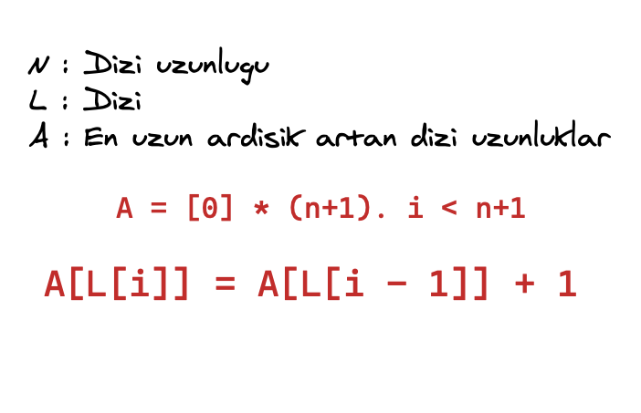

2 minutes
Algoritma Cozumu - Orta
Problem tanınımı
- N bir tamsayı ve 1 den N kadar olan sayılardan oluşan permütesyon kümesi L olsun.
- Örnek N = 4 ve L = [4,2,1,3]
- İstenilen L dizisiniz sıralanması fakat sıralama belli bir kurala göre olucak .
- Seçilen bir öğe ya en sola ya da en sağa atabiliyoruz.
Sıralamak için minimum adım sayısını bulunuz
Örnek
N = 2 L = [1,2] sonuç 0 (Sıralı)N = 6 L = [5, 2 ,1 ,3 ,4 6] sonuç 3
Cozum
- En buyuk artan ardisik(1 er 1 er ) kume bulunur
- L = [5,2,1,3,4,6] orneginde
2 , 3 , 4uzunlugu S olsun - Eger bunlar disindakileri saga veya sola atarsak 2,3,4 yan yana gelecektir .
Sonuc olarak diziyi
N - Shamlede siralayabiliriz (tumevarim ile ispatlanabilinir)En uzun ardisik artan dizi uzunlugunu (S) bulmak icin 
Sinirlar
- 1<= N <= 10^6
Kod - Python
N = int(input())
L = list(map(int,input().split())) # Tek satirdaki bosluk verilmis alma
A = [0]*(N+1)
for i in range(N):
A[L[i]] = A[L[i] - 1] + 1
print(N - max(A))Kod - C++
#include<bits/stdc++.h>
using namespace std;
const int N = 1000005;
int arr[N], n;
int lsis[N];
int main() {
cin >> n;
for(int i = 1 ; i <= n ; i++ ){
cin >> arr[i];
}
for(int i = 1 ; i <= n ; i++) {
lsis[arr[i]] = lsis[arr[i]-1]+1;
}
cout << n - *max_element(lsis+1,lsis+1+n) << endl;
}
comments powered by Disqus